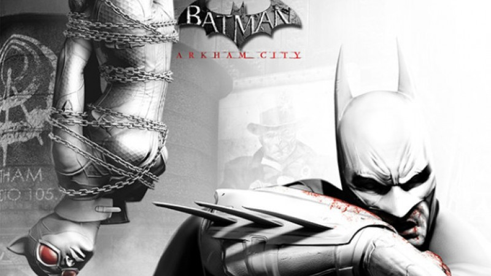

Có rất nhiều người tin rằng phần lớn game thủ không chơi các tựa game chơi đơn. Nó sai hoàn toàn. Có rất nhiều tựa game chơi đơn tuyệt vời để khiến game thủ hài lòng trên tất cả các nền tảng. Không tin chúng tôi? Dưới đây là top 10 trong số đó!
#10 Batman: Arkham City
Bắt đầu với top 10 thì chúng ta có tựa game có thể là 1 trong những game về siêu anh hùng xuất sắc nhất. Dù trước đó có Marvel's Spider-Man, Arkham Trilogy nhưng Batman Arkham City vẫn đứng trên tất cả.
Trong game thì Batman phải thâm nhập vào một khu nhà tù mới của Gotham đó là Thành phố Arkham; một thí nghiệm điên loạn do tiến sĩ Hugo Strange đứng đầu. Anh ta phải sống sót trước các tù nhân và làm sáng tỏ kế hoạch để cứu lấy Gotham.
Trận chiến tự dơ đã trở lại và hay hơn bao giờ hết, và bạn sẽ lao lên để ngăn chặn kẻ ác, thực hiện các nhiệm vụ với Batman.
#9 Fallout 3

Một số bạn có thể phản đối rằng vì sao Fallout 4 lại không có trong danh sách này mà Fallout 3 lại có. Nhưng nếu bạn nhìn vào những gì Bethesda đã làm, nó đã tạo ra xu hướng cho các trò chơi thế giới mở trong suốt nhiều năm.
Bạn sẽ vào vai một đứa trẻ phải phiêu lưu vào vùng đất hoang đầy phóng xạ để tìm người cha. Hành trình thực sự khó khăn và sự thật về thế giới không dễ dàng đón nhận. Nhưng sẽ có rất nhiều việc phải làm nên bạn hãy sẵn sàng đón nhận thử thách và vượt qua nó.
Xây dựng nhân vật và thực hiện nhiệm vụ theo cách bạn muốn và hãy nhìn những hành động của bạn ảnh hưởng lên thế giới như thế nào.
#8 Elden Ring

Game chỉ mới ra mắt vào tháng 2 năm 2022 và đã được ca ngợi là một trong những trò chơi hay nhất từ trước đến nay. Cũng như là ứng cử viên cho danh hiệu Trò chơi của năm 2022 bởi hầu hết các nhà phê bình và người hâm mộ.
Nhưng điều gì làm cho trò chơi này trở nên độc đáo? Nói một cách đơn giản, FromSoftware đã làm mọi thứ có thể để phát triển các tựa game trước đó và thêm nét tinh tế mới cho tựa game tiếp theo.
Game lần đầu kết hợp tính năng thế giới mở trong khi vẫn giữ lối chơi có phần "bạo lực" mà các game thủ ưa thích. Đi cùng với đó là những thử thách; bạn sẽ lang thang trong thế giới của người bất tử và quái vật này để khám phá và đi tìm những thử thách khác nhau.
#7 The Witcher: Wild Hunt

CD Projekt Red có thể không phải là hãng phát triển trò chơi hàng đầu sau những gì xảy ra với Cyberpunk 2077, nhưng nhiều người tin rằng The Witcher sẽ trở lại và được cho là trở lại một cách mạnh mẽ hơn nữa.
Điều đó nói lên điều gì đó, vì The Witcher 3: Wild Hunt được khen ngợi là một trong những game nhập vai xuất sắc nhất từ trước đến giờ. Ở đây bạn sẽ vào vai của Geralt of Rivia một lần nữa để bảo vệ con gái nuôi của mình ở Ciri. Bạn sẽ đi qua những vùng đất theo phong cách thời trung cổ đầy ma thuật với những con quái vật và sự hỗn loạn để cứu con gái và ngăn chặn bóng tối đang ập đến.
#6 God Of War

Để rõ ràng, chúng ta sẽ không nói đến phần game gốc từ PS2; chúng ta đang nói đến phần tiếp theo của PS4 đã khởi động lại thương hiệu nhượng quyền một cách mượt mà trong khi vẫn duy trì cốt truyện ban đầu.
Trong trò chơi, Kratos thấy mình đã già đi ở vùng đất khắc nghiệt đầy rẫy những thực thể Bắc Âu. Tuy nhiên khi người vợ yêu quý của anh qua đời, ước nguyện cuối cùng của cô là anh và cậu con trai Atreus đến một nơi nằm sâu trong vùng đất thần bí để rải tro cốt của cô.
Điều khác biệt so với game gốc ở đây là trải nghiệm tình cha con sâu đậm. Kratos giờ đã là người đàn ông khác, anh cầm đôi rìu thay vì cầm đôi kiếm.
Hãy đắm mình trong trò chơi để hiểu tại sao rất nhiều người đang mong đợi God Of War Ragnarok.
#5 Grand Theft Auto V

Đây là một trong những game được bán chạy nhất mọi thời đại, nó vẫn bán chạy mặc dù đã được ra mắt gần một thập kỷ trước. GTA V đã gây sốc cho nhiều người không chỉ chất lượng của game và sự tồn tại lâu dài của nó nhờ vào GTA Online. Một phần ngoại truyện của nó đã trở nên thành công tới mức bạn có thể mua nó mà không cần trò chơi chính.
Nội dung chính tập trung vào 3 người đàn ông khác nhau ở thành phố hư cấu Los Santos. Game mang lại cho người chơi rất nhiều sự tự do và phần game trực tuyến tiếp tục đưa người chơi trở lại với các nội dung được cập nhật liên tục
#4 The Legend of Zelda: Breath of the Wild

The Legend of Zelda: Breath of the Wild là tựa game được ra mát cho Nintendo Switch, ngay lập tức không chỉ trở thành một trong những game được yêu thích nhất mà còn là một trong những game hay nhất từng được tạo ra.
Tại sao ư? Bởi đây là lần đầu tiên Link có thể khám phá Hyrule trong lúc rảnh rỗi. Bạn có thể đưa Link đi vào hầm ngục chính hoặc bạn có thể đưa anh ta đi các hầm ngục nhỏ để tăng thêm sức mạnh hoặc thực hiện các nhiệm vụ phụ,... Nó không có sự ràng buộc và quan trọng hơn, nó đang miễn phí!
#3 The Elders Scroll V: Skyrim

Thương hiệu Elders Scroll trong nhiều năm là một trong những đỉnh cao của nội dung game chơi đơn và nó đã lên 1 đỉnh cao mới nữa với Elders Scroll V: Skyrim.
Đây là trò chơi mà bạn sẽ muốn đắm mình vào và không bước ra khỏi thế giới đó trong một khoảng thời gian dài. Bạn sẽ đóng vai một Dragonborn và phiêu lưu khắp vương quốc của Skyrim.
Chỉ riêng trò chơi chính đã có hàng trằm giờ nội dung, sau đó bạn sẽ đi sâu vào DLC và sẽ được tận hưởng nhiều hơn nữa. Trò chơi này sẽ là những gì bạn mong muốn, vì vậy hãy tận hưởng nó.
#2 Half-Life 2

Chúng tôi biết nhiều người mong muốn trong danh sách này có Half-Life 3, nhưng thật đáng tiếc vì điều đó chưa thể xảy ra được. Chúng tôi cũng không chắc game đó có được cho ra mắt hay không. Tuy nhiên nó chỉ khiến Half-Life 2 trở nên quan trọng hơn. Nếu bạn chưa chơi trò này thì bạn nên chơi đi trước khi quá muộn.
Bạn sẽ vào vai của tiến sĩ Gordon Freeman một lần nữa để cứu lấy thế giới khỏi mối đe dọa từ người ngoài hành tinh. Nhưng Valve đã đưa lối chơi của game lên một tầm mới bằng cách đảm bảo mọi thứ bạn làm đều ảnh hưởng đến môi trường xung quanh. Vì vậy hãy cầm cây xà beng và nhiều vũ khí khác nữa để cứu thế giới. Cùng với đó là tìm ra sự thật ẩn giấu đằng sau những sự việc đó.
#1 Ghost of Tsushima - Director's cut
Hãy tin chúng tôi nói rằng có NHIỀU game mà chúng tôi có thể đặt chúng ở vị trí top 1, nhưng Ghost of Tsushima - Director's cut xứng đáng hơn tất cả vì những gì nó đã làm cho người chơi cảm thấy và những thứ mà nhà phát triển đặt vào trong đó.
Bạn sẽ nhập vai vào một Samurai cố gắng bảo vệ hòn đảo khỏi những kẻ xâm lược. Nhưng đó chỉ là bề nổi của tảng băng chìm mà thôi. Bạn sẽ đi khắp Nhật Bản mà gặp gỡ nhiều nhân vật khác nhau.
Ngoài ra các trận đấu kiếm căng thẳng đều hoàn toàn dựa vào kỹ năng thay vì chỉ bấm nút. Do đó nhiều người coi đây là một trong những trò chơi hay nhát từ trước đến nay.